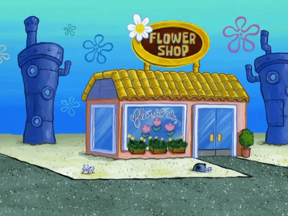

Bikini Bottom Flower Shop (GIF Format)

About This Image
This image features the iconic Flower Shop from the underwater world of SpongeBob SquarePants. Even under the sea, botanical legends exist in the form of these bright, stylized floral buildings and decorations.
Why GIF Format?
I chose the GIF format for this image because it captures the subtle animations and bright, flat colors of the cartoon style. GIFs are perfect for looping animations that don't require the complexity of a full video file, making them ideal for my web based "Digital Garden."
Image source: GIPHY - SpongeBob SquarePants